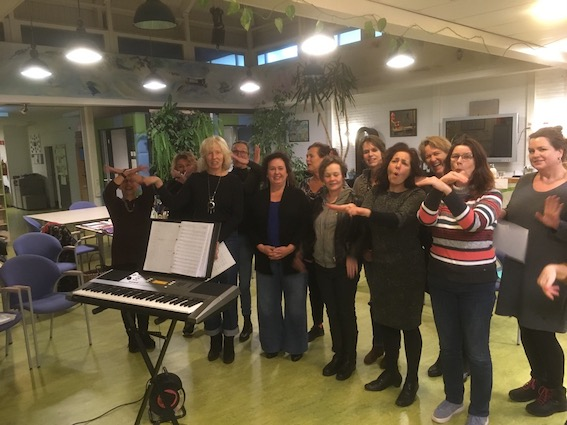
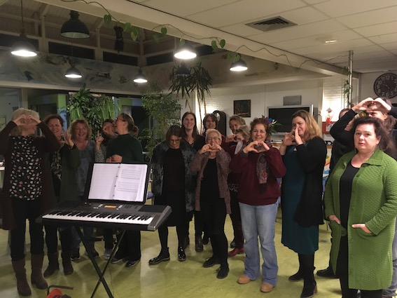

Geschiedenis
LISTEN TO THE MUSIC bestaat sinds najaar 2005. Pittige en meer simpele arrangementen wisselen elkaar af. Er wordt hard gewerkt, maar het plezier in zingen staat voorop! Iedereen die muzikaal kan mee komen is welkom. De arrangementen zijn op maat gemaakt, en van elk nummer zijn oefenbestanden beschikbaar.
Optredens
LISTEN TO THE MUSIC treedt zo'n vier a vijf keer per jaar op, o.a. op de Korendagen in Paradiso, Haarlem en of Monnickendam.
Andere activiteiten
Daarnaast organiseren we incidenteel extra activiteiten zoals gerichte workshops of een korenweekend.

